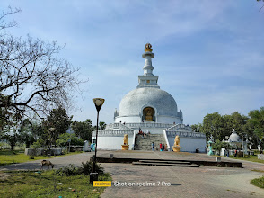
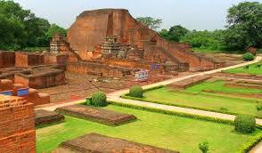
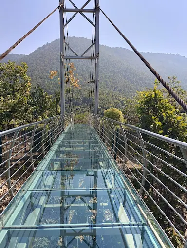

Discover ancient landmarks, vibrant festivals, and delicious food.

A beautiful stupa dedicated to peace.

Ancient center of learning and a symbol of Indian education and scholarship.

It's transparent glass sky bridge constructed at Rajgir. It's also called Glass sky walk. In a bid to boost tourism in the state.
Bihar is home to diverse traditions, folk dances like Jat-Jatin and Bidesia, and festivals such as Chhath Puja, Teej, and Holi. The state's literature and crafts showcase its timeless cultural essence.
For inquiries and tour packages, email us at: info@bihartourism.in